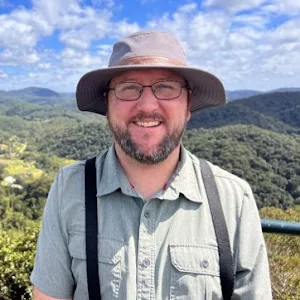

Dr. Hima Hassenruck-Gudipati
Project Client
Name: Dr. Hima Hassenruck-Gudipati
Role: Assistant Professor
Affiliation: Southern Oregon University
Background
I am a geomorphologist interested in how environmental changes shape landscapes, focusing on rivers, deltas, and wetlands. My research investigates how key drivers like sea-level rise, altered precipitation patterns, and human activities influence landscape evolution. I use a combination of field methods, remote sensing, and numerical modeling to study watershed responses to climate change, river channel evolution, and sediment-hydrology dynamics. My work spans diverse regions and involves collaborations with tribal government and fellow researchers. Current projects include climate change impacts on lake sediment, floodplain inundation and evolution, and sediment-vegetation interactions.
Project Goals
I am building on a dataset first established by Dr. Charles Schelz, which monitored approximately 50 stream locations, many including wetland areas in the Cascade-Siskiyou National Monument. These observations help frame a strategy for identifying which meadows are most important to monitor and potentially restore.

Dr. E. Jamie Trammell
Project Client
Name: Dr. E. Jamie Trammell
Role: Chair and Professor of Environmental Science & Policy
Affiliation: Southern Oregon University
Background
I am a landscape ecologist interested in modeling landscape change with explicit focus on the integration of socioeconomic and biophysical drivers. I am particularly interested in modeling alternative landscape futures in order to better understand how various environmental drivers combine to determine the future condition of both terrestrial and aquatic systems. I continually work to translate disparate data sources (from climate to social to economic to ecological) into a common geospatial framework for landscape-level analyses, including the integration of aquatic and terrestrial systems, to facilitate visualization and communication. I enjoy working in complex land and seascapes to synthesize our knowledge about a given land or seascape.
Project Goals
With the help of the Lost meadows tool I hope to locate where meadows are, where they used to be, and where they can be again.